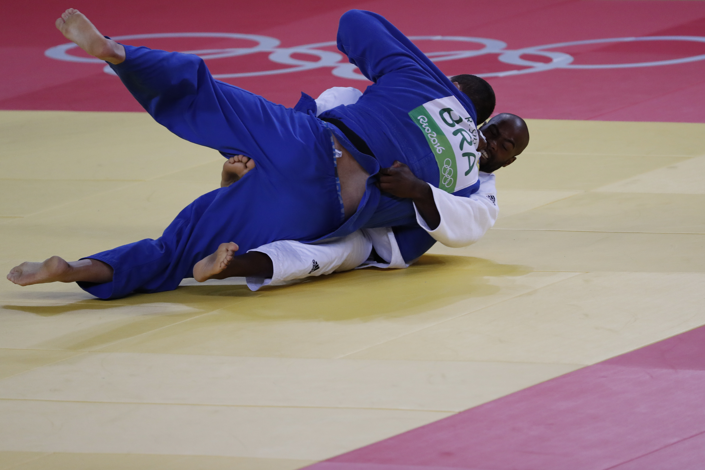

Quais os benefícios da luta ?
Mas os benefícios para quem treina lutas não param por aí. Esses exercícios são capazes de criar um engajamento maior no participante e transmitir conceitos de hierarquia e disciplina.
É o que explica Márcio Padilha, que é empresário e educador físico com experiência de 25 anos e faixa preta em judô e roxa em Jiu Jitsu. "As lutas proporcionam o treinamento que vai além, inclusive mental e psicológico. Isso acaba por impactar a vida delas, ajuda a agir, reagir, se defender, se colocar na hora certa, no momento certo".
Proprietário de uma academia em Brasília, ele reconhece uma diferença entre os praticantes de luta e de outras modalidades. "As pessoas vêm sempre com um objetivo primário de emagrecimento ou acondicionamento físico, mas acabam se fidelizando mais nas artes marciais, que as ajudam a enfrentar melhor até os desafios da vida", explica.
Segundo o empresário, as lutas têm um processo pedagógico que favorecem a prática e o envolvimento pelos alunos, com o ganho paulatino de habilidades e, consequentemente, o avanço nas graduações. Para o profissional, esse mecanismo favorece um engajamento mais profundo do praticante.
"O nível de profundidade do engajamento é maior por conta de todo enredo que envolve a pessoa. Estão embutidos princípios, valores e desafios que a pessoa precisa vencer para buscar um outro patamar. Assim, ela acaba se dedicando por um período de tempo razoável. Vai muito além de emagrecer e perder peso", esclarece.
Atividade completa
As diversas lutas trazem benefícios comuns e trabalham com todas as valências físicas, como resistência, velocidade de reação, deslocamento e de movimentação dos membros, flexibilidade, resistência muscular, coordenação, agilidade e ritmo. A prática ainda libera endorfina e serotonina no cérebro, que promovem uma sensação de prazer e bem-estar.
Mas cada uma também possui características específicas. Por isso, explica Márcio, é preciso analisar as características de cada prática para escolher a que mais se adapta ao estilo e personalidade de cada pessoa. "Algumas lutas oferecem muito contato físico, outras são mais arte. Então, é preciso ver o estilo de cada um", afirma.